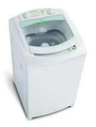

Sequência finita de instruções para se resolver um problema. (aplica-se a diversas áreas de conhecimento)
Exemplo:
Problema: Lavar roupa suja:
Consiste em utilizar máquina(s) para executar o procedimento desejado de forma automática ou semiautomática.
Exemplo:
Problema: Lavar roupa suja:

COMPUTADOR
Programas de computador são algoritmos executados pelo computador (em linhas gerais)
Conclusão: : o computador é uma máquina que automatiza a execução de algoritmos.
Qualquer algoritmo? Não. Apenas algoritmos computacionais: